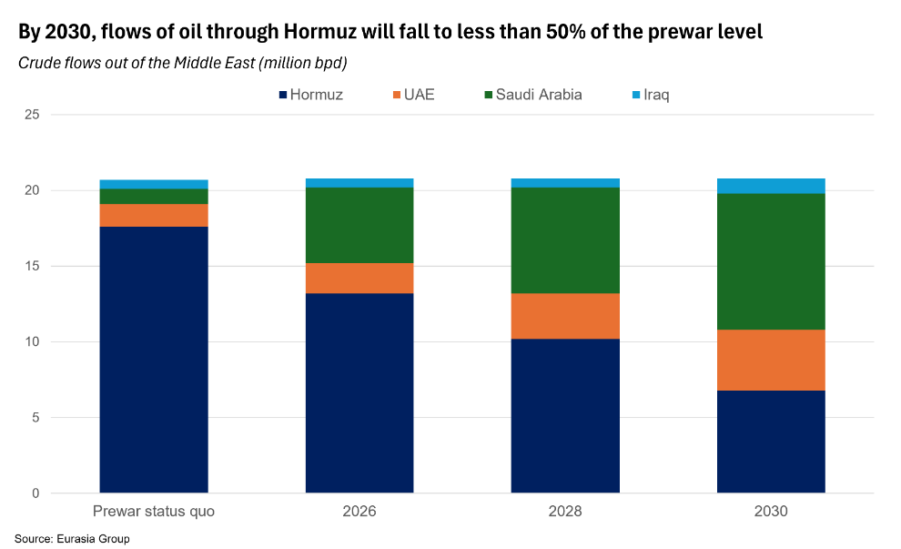
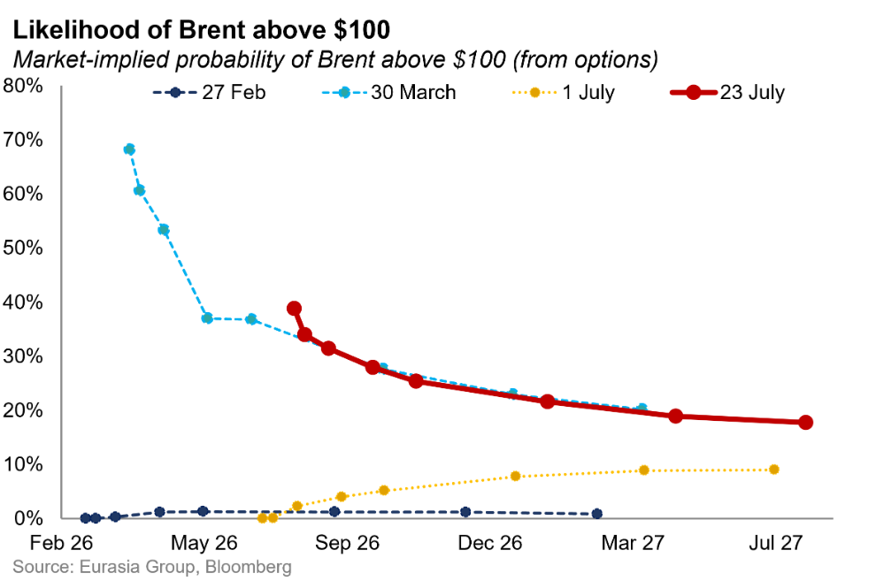
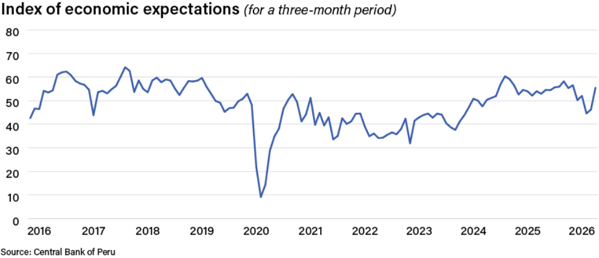
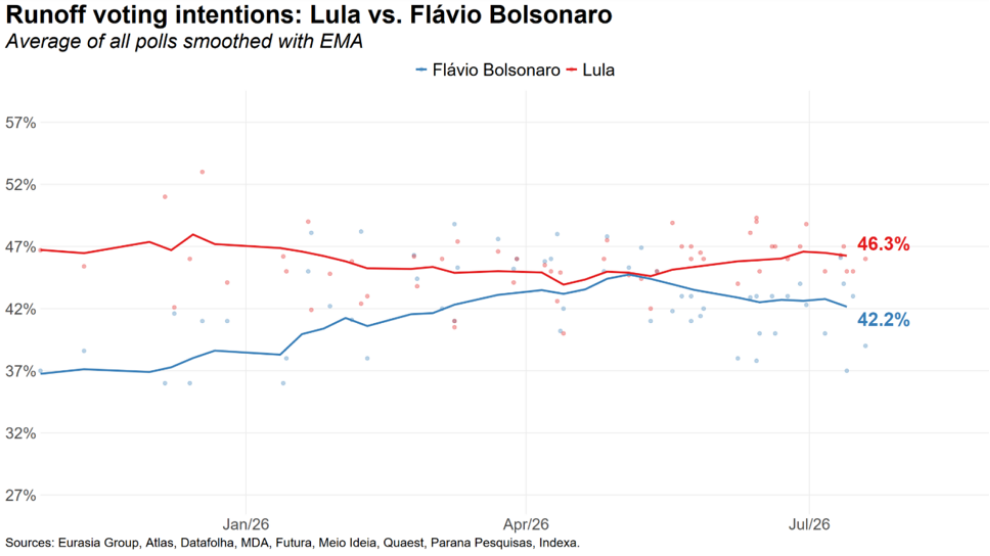

|
23 Jul 2026 07:51 EDT |
||
|
|||
|
|||
summary
|
|||
the top lineOil—Strait of Hormuz significance for oil trade could be cut in half by 2030

Geoeconomics—Escalation in the Middle East tests global resilience buffers

US, Geo-technology—US AI governance will stay fragmented and executive-driven through 2027
Ukraine—Zelensky’s concession restores calm, but lasting political costs persist
Peru—Upgrading trajectories on expected investment push and rare government stability

Upcoming conference calls |
||
eg in depthBrazil—Polling biases suggest a narrower Lula lead: Brazil’s presidential election will be more competitive than consensus suggests, with President Luiz Inacio Lula da Silva’s runoff lead over Senator Flavio Bolsonaro probably resting closer to 2 or 2.5 percentage points rather than the current 4-point lead indicated by the average of all polls. Polls continue to have biases that have led them to historically understated support for conservative candidates, including poor likely-voter modeling, face-to-face survey bias, and a shifting respondent profile (non-response bias). Polls will likely show a tighter race as more pollsters adopt likely-voter adjustments closer to the vote. Read more here. Reach out to discuss: brazilresearch@eurasiagroup.net. 
Bolivia—Paz signals progress with IMF negotiations: President Rodrigo Paz said on 21 July that his administration is making significant progress in negotiations with the IMF and that he will send “clear economic signs” in the next few days, reinforcing EG’s view that an agreement is likely in the near term. The administration is anticipating $5 billion (around 8% of GDP) in funding from different multilaterals. A recent FX unification bodes well for talks, and the currency’s subsequent depreciation will increase the administration’s incentives to secure a program to build buffers and have more flexibility. The fiscal adjustment path remains challenging, as does the outlook for structural economic reforms; Paz will likely need to make significant concessions to his liberalization agenda to avoid social unrest (see note, 30 June). Read more here. Reach out to discuss: latinamerica@eurasiagroup.net.
Upcoming events:
The EG Daily Brief is compiled by Jens Larsen, Lucy Eve, Babak Minovi, Pietro Guglielmi, Rahul Bhatia, Marilia Sirio, Joseph Craven, Martina Silva, and Trista Kelley, with help from Marina Tavares, and Astral Betteridge. |
||
 |
closing quipI think the Houthis, frankly, got snookered into this thing by the Iranians. And they were smart to stay out of it, and they should stay out of it and they should stop. We’ll see what happens there. Obviously, it’s not a positive development.”—US Secretary of State Marco Rubio said regarding the Houthis' decision to attack Saudi ships in the Red Sea. |
||
 |
|||